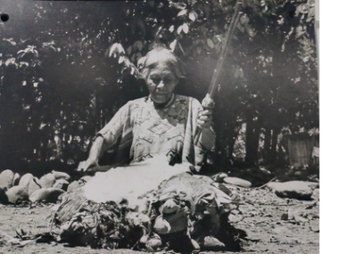
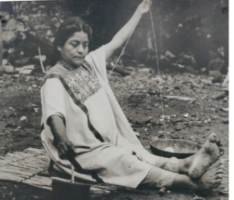
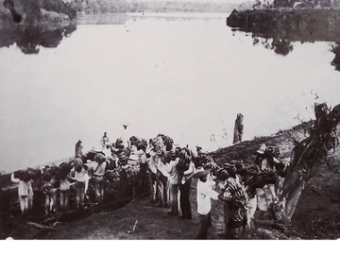

Principales cultivos con importancia económica 1400 – 1950: Algodón 1860 – 1980: Tabaco 1910 – 1940: Plátano Roatán «Michel Gross» 1950 – Actualidad: Caña de azúcar y piña
 Indígena de Usila «vareando» el algodón para proceder a su hilado. Fotografía: Imgard Weitlaner Johnson, 1952.
 Chinanteca de Valle Nacional hilando el algodón con huso y malacate. Fotografía: Imgard Weitlaner Johnson, 1952.
 Cargando un chalán con plátano a orillas del río Papaloapan. Fotografía: autor desconocido.